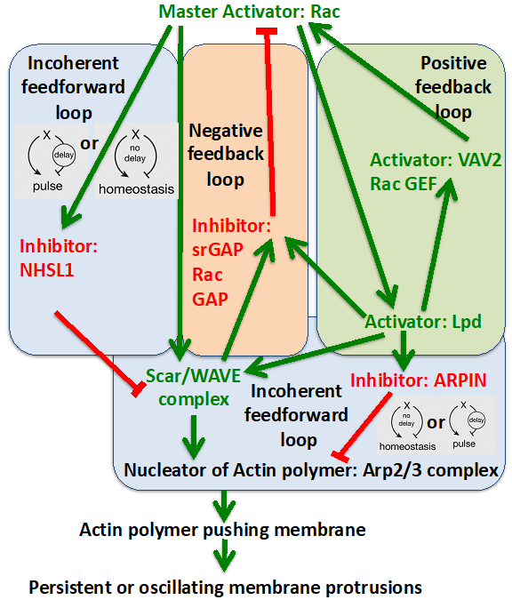

Research Areas
Current Work
Mathematical Modelling of Cytoskeletal Signalling Circuits Controlling Lamellipodial Protrusion and Persistent Cell Migration
My research develops mathematical models to understand how cytoskeletal signalling networks regulate cell protrusion and migration.
The modelling approach focuses on reduced dynamical systems that capture the essential mechanisms underlying cytoskeletal signalling while avoiding unnecessary biochemical complexity.
Biological Context
Cell migration plays an important role in wound healing, immune response, and cancer metastasis.
Migrating cells extend protrusions at their leading edge known as lamellipodia, where actin polymerisation drives membrane advancement.
Experimental studies suggest that regulators such as Lamellipodin (Lpd), NHSL1, ARPIN, and Rac signalling form interacting regulatory circuits that influence protrusion dynamics and migration persistence.

Modelling Objective
The central modelling question is:
Which minimal dynamical interaction structures are sufficient to organise cytoskeletal activity and persistent cell migration?
The aim is to construct reduced mathematical models that capture experimentally observed behaviours while avoiding unnecessary biochemical complexity.
Research Approach
The modelling strategy combines experimental observations with dynamical systems theory.
Data interpretation
Quantitative imaging data is used to inform and constrain candidate dynamical models of cytoskeletal activity.
Model construction
Minimal interaction networks are proposed to represent regulatory relationships between cytoskeletal components.
Dynamical systems modelling
Reduced ODE systems are used to investigate the temporal behaviour of signalling circuits.
Spatial modelling
Models are extended to spatial reaction-diffusion PDE systems describing signalling dynamics along the cell edge.
Analysis
Stability, oscillatory behaviour, and spatial coordination within the models are investigated using analytical and computational methods.
Collaboration
This research is carried out in collaboration with an experimental cytoskeleton research group at King’s College London. High-resolution live-cell imaging experiments provide quantitative measurements of protein activity and membrane dynamics at the leading edge of migrating cells.
Model development and experimental analysis proceed iteratively, with simulations used to interpret experimental observations and guide further experimental investigation.
Long-Term Goal
The long-term aim of this research is to develop mechanistic mathematical models that clarify how cytoskeletal signalling networks regulate cell migration. By identifying the dynamical mechanisms that organise protrusion and migration persistence, these models aim to provide a theoretical framework for understanding how migration behaviour arises in biological systems and how it may change in contexts such as cancer metastasis, wound healing, and immune cell motility.